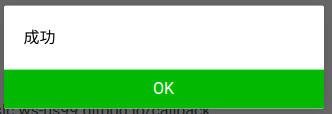

このハンズオンではOpenAIのサービス「ChatGPT」のAPIを自前のアプリケーションに組み込むことでAIアプリケーション開発を体験していただく内容となっています。今回は手軽にChatGPTに組み込むアプリケーションの題材としてLINE botに導入することで自分だけのAIチャットボットを作る体験をしていきます。
なお、開発環境はすべてブラウザ上で完結するのでお使いのパソコンで手軽に体験していただけます。
ハンズオンの構成
本ハンズオンは以下の構成になっております。
Step1ではOpenAIのAPIキーを取得してAPIからChatGPTとやり取りをしてみます。
Step2ではLINEbotを動かすための設定を進めていきます。
Step3ではStep1とStep2をあわせてChatGPTを使えるLINEbotを構築していきます。
Step4では応用編として、6/13にリリースされた新機能である「Function Calling」を使ってChatGPTの機能を拡張していきます。
次のページから早速ハンズオンを進めていきましょう。
Gitpodのワークスペースを用意する
今回は簡単に環境構築をできるようにGitpodというサービスを使用してオンラインの開発環境を構築します。以下のリポジトリにアクセスします。
https://github.com/Miura55/chatgptbot-handson
レポジトリの下部にあるREADMEにある Open in Gitpod をクリックすることで今回のハンズオンの開発を構築します。
以下のようにオンラインのIDEが起動されたら開発環境構築は完了です。
ここまでできたらハンズオンの準備は完了です。次のステップでからハンズオンを進めていきましょう。
OpneAI API keyを取得(すでに取得している場合はスキップしてOKです)
https://platform.openai.com/ を開き、View API keysを開きます。

APIキーを作成してない場合は、Create new secret keysをクリックしてAPIキーを新規で作成します。
必要があればシークレットキーを管理するための名前を設定します。今回はhandsonという名前を設定します。
APIキーが表示されたら手元にメモしておきます。一度Doneボタンをクリックして画面を閉じると再度APIキーを確認することができません。
メモしたAPIキーは.envファイルの OPENAI_API_KEY に記入します。(以下のYOUR_API_KEY の箇所をご自分のAPIキーに書き換えます)
OPENAI_API_KEY=YOUR_API_KEYAPIを実行してみる
実際にAPIを実行してみます。まずはコマンドラインからAPIを実行してAPIを動かしてみます。
Gitpodのターミナルで以下のコマンドを実行します。YOUR_API_KEY の箇所はご自分のAPIキーに書き換えます。
curl https://api.openai.com/v1/chat/completions \
-H "Content-Type: application/json" \
-H "Authorization: Bearer YOUR_API_KEY" \
-d '{
"model": "gpt-3.5-turbo",
"messages": [{"role": "user", "content": "こんにちは!"}]
}'
ターミナルに貼り付けるときに以下のダイアログが表示されたらコピペを許可してもらっていいです。
APIを実行して以下のようにリクエストしたメッセージに対する返答がレスポンスで返ってきたらAPIは正常に実行されています。
{
"id": "chatcmpl-ExampleId",
"object": "chat.completion",
"created": 1686153797,
"model": "gpt-3.5-turbo-0301",
"usage": {
"prompt_tokens": 10,
"completion_tokens": 8,
"total_tokens": 18
},
"choices": [
{
"message": {
"role": "assistant",
"content": "こんにちは！お元気ですか？"
},
"finish_reason": "stop",
"index": 0
}
]
}
Chat GPTをAPIから動かせたところで次のページからChat GPTのAPIを使ったアプリケーションを作っていきましょう
続いてはアプリケーションにChatGPTのAPIを組み込んでみます。
今回はLINE上で動くAIチャットボットを作っていきます。
Messaging APIのチャネルを用意する
まずはLINE botを動かすためには「Messaging API」を利用します。ここではそのMessaging APIを接続するために必要な接続情報を用意します。
以下のドキュメントを参考にLINE DevelopersコンソールでMessaging APIのチャネルを作成します。
https://developers.line.biz/ja/docs/messaging-api/getting-started/#using-console
チャネルを作成したらMessaging APIの接続情報を取得します。
作成したチャネルのページの「チャネル基本設定」タブを選択して、画面下部にある「チャネルシークレット」をコピーします。
コピーするときは、チャネルシークレットの右端にあるクリップボードアイコンをクリックするとコピーすることができます。
コピーしたチャネルシークレットは.envファイルの LINE_CHANNEL_SECRET に記入します。(YOUR_CHANNEL_SECRET の箇所をご自分のチャネルシークレットキーに書き換えます)
LINE_CHANNEL_SECRET=YOUR_CHANNEL_SECRET次に「Messaging API設定」タブを選択して、画面下部にある「チャネルアクセストークン」に移動します。
チャネル作成時にはチャネルアクセストークンが生成されてない状態なので、「発行」ボタンをクリックしてチャネルアクセストークンを発行します。
チャネルアクセストークンが発行されたら.envファイルの LINE_CHANNEL_ACCESS_TOKEN に記入します。( YOUR_CHANNEL_ACCESS_TOKEN の箇所をご自分のアクセストークンに書き換えます。)
LINE_CHANNEL_ACCESS_TOKEN=YOUR_CHANNEL_ACCESS_TOKENLINE botを動かすサーバーを起動する
今回はGitpod上でLINE bot用にサーバーを立ち上げます。まずはサーバーを立ち上げて動くかどうかを確認してみます。
サーバーはGitpodのターミナル上で以下のコマンドを実行すると立ち上がります。
uvicorn app:app --reload --host 0.0.0.0 --port 5000起動後、GitpodのIDE下部にある「ports」タブをクリックして、ポート番号が5000番の行にある鍵のアイコンをクリックしてURLを外部に公開します。これによりLINEのプラットフォームから現在起動中のLINE botのサーバーにアクセスできるようになります。
左側にあるクリップボードアイコンをクリックしてパブリックになったサーバーのURLをコピーして手元にメモしておきます。このURLがLINE botを接続するために必要なWebhook URLのベースになります。
Webhook URLを設定する
LINE Developerコンソールに移動して「Messaging API設定」に移動し、「Webhook設定」のWebhook URLに「先程コピーしたGitpodのURL+/callback」の形でURLを設定します。
設定を終えたら「検証」ボタンをクリックしてLINE botを動かすサーバーに接続できるか確認します。
検証ボタンをクリックして以下のダイアログが表示されたらサーバーに正常に接続できています。もしそれ以外のエラーが出た場合は設定したWebhook URLが正しいかどうかや、URLがパブリックに設定されているかをご確認ください。
LINE botとやり取りをするために更に設定を行います。「Messaging API設定」タブにある「LINE公式アカウント機能」の項目にある「応答メッセージ」の項目にある「編集」をクリックします。
応答メッセージの項目を無効にします。こうすることでLINE botのサーバーとやり取りをできるようになります。無効に設定をすると自動で保存されます。
オウム返しボットを動かす
これでLINE botを動かす準備ができました。スマホのLINEアプリのQRコードリーダーからLINE Developerコンソールの「Messaging API設定」タブにあるQRコードを読み取って友だち追加します。
友だち追加したらトーク画面に移動して任意のメッセージを送信します。以下のように送信したメッセージがbotから返ってきたらオウム返しボットは正常に動作しています。もし何も返ってきてない場合はアクセストークンが正しいか確認をしてください。(Gitpod側のターミナルにも何かエラーが出てないか確認をするとエラーの原因がわかることもあります。)
ここまでできたらLINE botが動かせている状態です。次のステップではいよいよChatGPTと連携するLINE botを作っていきましょう。
ここではLINE botでChatGPTのAPIを呼び出してAIチャットボットを作っていきます。
Botのコードを変更する
先程オウム返しに使ってた handle_message 関数を以下のコードに書き換えます。
@handler.add(MessageEvent, TextMessage)
def handle_message(event):
# ChatCPTのAPIを叩く
response = openai.ChatCompletion.create(
model='gpt-3.5-turbo-0613',
messages=[
{
"role": "system",
"content": "日本語で応答してください"
},
{
"role": "user",
"content": event.message.text
}
]
)
# ChatCPTの応答をLINEに返す
chat_response = response['choices'][0]['message']['content']
res_message = TextSendMessage(text=chat_response)
linebot.reply_message(event.reply_token, res_message)
プログラムを書き換えたら「Ctrl + S(Macの方はCmd + S)」で保存をします。保存をすると自動で更新がかかるので、ボットにメッセージを送信できる状態になります。
動作確認
それでは実際にメッセージを送ってみます。トーク画面で何かメッセージを送って以下のようにChatGPTからの返答が返ってきたらボットは正常に動作しています。
これでChatGPTが動作するLINE botができました。ChatGPTがとても優秀なのはお分かりいただけるかと思いますが、いくつか弱点もあります。
その一つがリアルタイムの情報の回答に対応していないことです。例えば以下のように明日の天気を聞いても回答できないと返答されます。

この問題を解決する方法として、2023年6月13日にリリースされた新機能「Function calling」を使う方法があります。
https://openai.com/blog/function-calling-and-other-api-updates
この機能は簡単に言うとChatGPTの機能拡張を開発者が簡単に実装できるというものです。この機能を使えば天気のようなリアルタイムの情報の回答にも対応できるようになります。
というわけで次のステップでは応用編としてこのFunction callingという機能を使って指定した場所の天気をChatGPTが回答してくれるようにしていきます。
このステップでは、外部のAPIと連携してChatGPTの機能を拡張する体験をしていきます。そのサンプルとして、ここでは天気APIを使って指定した場所の明日の天気を解答する仕組みを作っていきます。
なお、今回はAPI連携の全体像をつかめるように実装は簡易的にしています。
Botのコードを変更する
まずはStep3で書き換えたhandle_message関数を削除して、以下の2つの関数をapp.pyの下に追加します。
def ask_weather(location):
import json
import requests
import collections
from datetime import datetime
from geopy.geocoders import Nominatim
# 天気を調べたい都市の緯度と経度を取得する
geolocator = Nominatim(user_agent="ChatGPT")
location = geolocator.geocode(location)
lat = location.latitude
lng = location.longitude
# フリーの天気予報API(Open Metro)を使って天気を取得する
param = {
'latitude': lat,
'longitude': lng,
'current_weather': 'true',
'hourly': ['relativehumidity_2m','precipitation_probability','weathercode','temperature_80m'],
'forcast_days': 1,
'start_date': datetime.now().strftime('%Y-%m-%d'),
'end_date': datetime.now().strftime('%Y-%m-%d'),
'timezone': 'Asia/Tokyo'
}
weather_res = requests.get('https://api.open-meteo.com/v1/forecast', params=param).json()
humidity = max(weather_res['hourly']['relativehumidity_2m'])
precipitation_probability = max(weather_res['hourly']['precipitation_probability'])
max_temperature = max(weather_res['hourly']['temperature_80m'])
min_temperature = min(weather_res['hourly']['temperature_80m'])
weathre_codes = weather_res['hourly']['weathercode']
code_counter = collections.Counter(weathre_codes)
weathre_code = code_counter.most_common()[0][0]
# レスポンスを整形
res = {
'humidity': humidity,
'precipitation_probability': precipitation_probability,
'max_temperature': max_temperature,
'min_temperature': min_temperature,
'weathre_code': weathre_code
}
return json.dumps(res)
@handler.add(MessageEvent, TextMessage)
def handle_message(event):
import json
# ユーザー関数のモデルを定義してメッセージと一緒にリクエストを送ることで関数にアクセスできるか判定する
response = openai.ChatCompletion.create(
model='gpt-3.5-turbo-0613',
messages=[
{
"role": "system",
"content": "日本語で応答してください"
},
{
"role": "user",
"content": event.message.text
}
],
functions=[
{
"name": "ask_weather",
"description": "Get the current weather in a given location",
"parameters": {
"type": "object",
"properties": {
"location": {
"type": "string",
"description": "The city and state",
},
},
"required": ["location"],
},
}
],
function_call="auto",
)
chat_response = response['choices'][0]['message']
# function_callを実行できるかどうかを判定
if chat_response.get('function_call'):
logger.info(chat_response)
function_name = chat_response['function_call']['name']
function_arguments = json.loads(chat_response['function_call']['arguments'])
# 関数を呼び出す(ユーザー関数のモデルを元に解析した値を使用する)
location = function_arguments.get('location', '名古屋')
function_response = ask_weather(location)
# 再度メッセージと関数のレスポンスを含めてAPIを実行する
response = openai.ChatCompletion.create(
model='gpt-3.5-turbo-0613',
messages=[
{
"role": "system",
"content": "日本語で応答してください"
},
{
"role": "user",
"content": event.message.text
},
{
'role': 'function',
'name': function_name,
'content': function_response
}
],
)
# ChatCPTの応答をLINEに返す
chat_response = response['choices'][0]['message']['content']
res_message = TextSendMessage(text=chat_response)
linebot.reply_message(event.reply_token, res_message)
軽くコードの解説
かなりコードの量が増えましたが、軽くコードを解説します。LINEで送信したメッセージを受け取ったときに実行するChatGPTのAPIのリクエストボディの中に新たに fuctions というパラメータを追加しています。
このパラメータは6/13のアップデートで追加された新機能の「Function calling」を実行しています。Function callingを使ってメッセージを返答するにはAPIを2回実行する必要があります。
1回目のAPIの実行では使用する関数名と説明を追加して、入力されたメッセージから取り出す値の説明と型を定義します。
今回のケースであれば天気の情報を取得するといった文脈のメッセージが来たときに地名を取得するようにしています。
functions=[
{
"name": "ask_weather",
"description": "Get the current weather in a given location",
"parameters": {
"type": "object",
"properties": {
"location": {
"type": "string",
"description": "The city and state",
},
},
"required": ["location"],
},
}
],1回目のAPIを実行したときのレスポンスのJSONの message の値は以下の通りです。
メッセージを解析して取得した値は function_call.arguments にまとめて入っていますが、逆に該当する値をメッセージから取得できない場合は function_call 自体レスポンスに存在しません。
Pythonであればこのargumentsの値を json.loads()で読み込んで続きの処理を実行すれば問題ないです。
{
"role": "assistant",
"content": null,
"function_call": {
"name": "ask_weather",
"arguments": "{\n \"location\": \"\u540d\u53e4\u5c4b\"\n}"
}
}
argumentsが存在したときには以下の関数が実行されます。簡単にやっていることを説明すると、指定した場所の経度、緯度を取得してそこからAPIキーなしで使うことができる天気予報APIであるOpen Metroを使って天気を取得して関数の戻り値をJSONに整形しています。
Open MetroのAPIの仕様についてはここでは詳細に解説しないので興味ある方は英語ですが以下のドキュメントが参考になります。
https://open-meteo.com/en/docs
ここで整形したJSONがそのまま2回目のChatGPTのAPIを実行するとき使うので、キーの名前は意味のある命名をすることがポイントです。
def ask_weather(location):
import json
import requests
import collections
from datetime import datetime
from geopy.geocoders import Nominatim
# 天気を調べたい都市の緯度と経度を取得する
geolocator = Nominatim(user_agent="ChatGPT")
location = geolocator.geocode(location)
lat = location.latitude
lng = location.longitude
# フリーの天気予報API(Open Metro)を使って天気を取得する
param = {
'latitude': lat,
'longitude': lng,
'current_weather': 'true',
'hourly': ['relativehumidity_2m','precipitation_probability','weathercode','temperature_80m'],
'forcast_days': 1,
'start_date': datetime.now().strftime('%Y-%m-%d'),
'end_date': datetime.now().strftime('%Y-%m-%d'),
'timezone': 'Asia/Tokyo'
}
weather_res = requests.get('https://api.open-meteo.com/v1/forecast', params=param).json()
humidity = max(weather_res['hourly']['relativehumidity_2m'])
precipitation_probability = max(weather_res['hourly']['precipitation_probability'])
max_temperature = max(weather_res['hourly']['temperature_80m'])
min_temperature = min(weather_res['hourly']['temperature_80m'])
weathre_codes = weather_res['hourly']['weathercode']
code_counter = collections.Counter(weathre_codes)
weathre_code = code_counter.most_common()[0][0]
# レスポンスを整形
res = {
'humidity': humidity,
'precipitation_probability': precipitation_probability,
'max_temperature': max_temperature,
'min_temperature': min_temperature,
'weathre_code': weathre_code
}
return json.dumps(res)上記の関数の実行結果を元にChatGPTのAPIをもう一度実行します。
ここでは1回目にAPIを実行したときと同様にLINEのメッセージを含めて関数の実行結果の文字列を "role": "function" として含めてAPIを実行することで関数の実行結果を元にしてChatGPTから返答が出力されます。
messages=[
{
"role": "system",
"content": "日本語で応答してください"
},
{
"role": "user",
"content": event.message.text
},
{
'role': 'function',
'name': function_name,
'content': function_response
}
],これまで今回のような他のAPIと連携をしたいときにはAPI連携に誘導するためにプロンプト(ChatGPTのやり取りをするときの導入のこと)を工夫する必要がありましたが、function callingを使えばより簡単にシステム連携を実現できるようになります。
システム連携以外にも1回目のAPIの実行だけでメッセージの内容を解析する用途でも使うことができます。
動作確認
それでは最後の動作確認です。
LINEアプリを開いて「名古屋の天気を教えて」という感じで知りたい場所の天気をbotに尋ねて天気の情報が返信されたら動作確認成功です。
以上でハンズオンの内容はすべて終了です。お疲れ様でした！最後に片付けを説明します。
Gitpodのインスタンスの削除
Gitpodはフリープランであればタイムアウトでインスタンスが止まるだけで請求は来ないのでハンズオンの復習をするために残してもいいですし、削除したい場合は https://gitpod.io/workspaces から削除することができます。
Messaging APIのチャネルの削除
Messaging APIのチャネルも残しても料金が発生するわけではありませんが、削除するときには「チャネル基本設定」タブの一番下にある「チャネルの削除」にある削除ボタンをクリックします。
その後表示されるダイアログにある「LINE Official Account Managerを表示」をクリックしてOfficial Account Managerに遷移します。
Official Account Managerの画面に遷移したらチェックボックスにチェックを入れて「アカウントを削除」をクリックしたらチャネルと公式アカウントが両方削除されます。
まとめ
今回はChatGPTのAPIを使ったアプリケーション開発をしてきました。ChatGPTはとても便利なサービスで開発者向けのAPIも提供されているところから最近では様々な企業がChatGPTを連携したサービスを提供しています(参考)。
これらのサービスはプロンプトを工夫することで目的の返答を返すようにしていましたが、今回紹介したFunction Callingを使うことでより簡単に目的に合わせたサービスを提供しやすくなります。